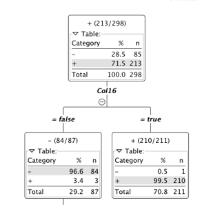

The goal of this project was that given a dataset with only 2 attributes, a name and a value, the classification had to be taken place to determine weather or not the name was labeled as a plus or a minus. While finding the right solution to be able to classifiy the situation correctly, attributes had to be built.
The dataset was in a very good format so no preprossing needed to be done. Loading the dataset into a simple excel sheet alowed me too take an intial look at the fromat and all the attributes. I noticed the names, and the pluses and minuses next to them. My first thought was to see what the distribution of plusses and minuses was. I put the dataset into KNIME and figured out that an overwhelming majority were “winners’, 213 to 85. The names seemed ordinary so I thought that whatever made these names winners would make most names in the world winners too.
My first strategy was to look at the data and before I added any attributes to figure out which way I should approach the problem. I was eye-balling different situations; name lengths, certain letters in the name, and how long the first and last names were. I decided not to concentrate on the middle name because I found different cases of “winners” and “losers” with every combination.
I realized that different distributions could also be the answer, so I decided to implement certain attributes to the dataset. The first attribute I added was the number of characters (spaces included) in the name. After I wrote a simple JAVA program that would create a new column of values, I tired running the program through KNIME again to see what would turn out. I used the decision tree learner program, to see if it could break down the data into distinct groups. The second attribute I added was the number of repeat characters that the name had. Then I moved on to the lengths of the individual names ( first and last). After finishing the functions that would create my new dataset I found myself back in the same place I started. I got nowhere closer to the solution. I realized the more time I’m going to spend with this the more I will forget my attributes so I created a small summary on what each attribute meant, then got back to work. The great idea of ratios came to my head and soon left it, as attribute number 6 yielded no promise what so ever. I went back to the drawing board. I took the first ten names and started writing down everything they had in common. Seeing those results lead me to my second phase, vowels and consonants. In retrospect, I was on the right track. I went through a plethora of attributes about vowels (first name vowel count, last name vowel count, total vowel count). After adding these attributes to the dataset I reran KNIME and found that primary splits on the decision tree were still based off of the second and third columns (Name Lengths). Not only did my first attempt yield horrible results, but my second even worse. I decided to make attributes the same way with consonants. The length of the name was still more accurate at predicting the “winners” than the vowels, or the consonants in the name. I did not even bother adding an attribute between the ratio of the vowels and consonants because it was obvious just by looking at it that it wouldn’t work. I took a step back from the problem and tried to think of an outside the box approach. I started looking at the length again, since it was by best idea so far. The difference between the two names came up, but after the 4th data item that theory was already disproven. Then came the idea of adding numerical values to the names. I decided to find the difference between the value on the alphabet of the first and last characters of the name. I decided to run with this idea of alphabetical attributes and added a very hopeful sum of all the words in their alphabetical stature. Well, that didn’t work. Although I made some progress I realized that I was going in the wrong direction. I had to find some different perspective of looking at this set of data. It was mentioned in class that it might be some type of name, or might rhyme with something but I refused to go down that route. It just didn’t make any sense. It had to be in the name. This new data set was the only one that made any progress so far and it still was very far form the answer. I reprinted the first 15 or so names and started circling consistencies in the name and that’s when I came upon the idea of individual letter positioning. I went through a couple ideas of certain letters in the name, but all my ideas were disproved too quickly to make then into attributes. I started writing down the positional letters of each name. Then I finally found it, although I have given up on the fact that there was any relation with vowels. I found that the second letter in the first name is a vowel if the person is a winner. I decided to add that as my 16th attributed, a Boolean if the second character was a vowel or not. The resulting dataset showed a great distribution. Although it wasn’t perfect, it was good enough for me. If we account in noise then I believe I have found the solution.
Forming conclusions in the data was the easiest part ofthis project. It was a given in the project description that the accurate distribution of the data given the rules is nearly 100 %. In KNIME, re-running the decision tree algorithm only takes a couple of seconds. If the distribution was not what I expected to see, it became obvious that the answer has not been found yet. When the anser was found the distribution came out to be what I expected to see and I knew I was done with the problem.
